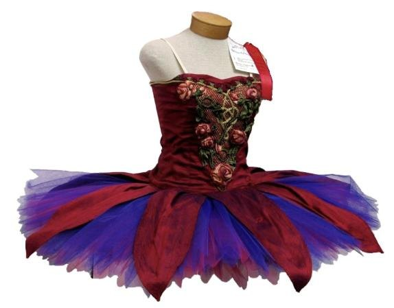
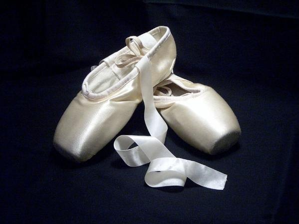

Балетный костюм
Костюм балерины должен быть красивым и в то же время не мешать движению. Он помогает зрителю понять, кого изображает артист, — принцессу, лебедя или сельскую девушку.
| Элемент | Назначение |
|---|---|
| Пачка | Сценическая юбка балерины. Классическая — короткая и жёсткая, «тарелкой»; романтическая — длинная, колоколом. |
| Пуанты | Обувь для танца на пальцах с жёстким носком («пятачком»). Шьются из атласа и завязываются лентами. |
| Купальник | Основа костюма и тренировочной одежды, плотно облегает тело. |
| Трико | Плотные эластичные колготы, элемент тренировочной и сценической одежды. |
| Балетки (чешки) | Мягкие тренировочные туфли для занятий у станка. |
| Гетры | Тёплая одежда для ног, помогает разогреть мышцы перед уроком. |
Пачка

Длинную романтическую пачку впервые надела Мария Тальони в балете «Сильфида» (1832). Позже пачка становилась всё короче, чтобы зрителю были видны ноги и сложные движения балерины. Классическая пачка сшита из многих слоёв жёсткого тюля.
Пуанты

Танец на пальцах прославила та же Мария Тальони. Первые пуанты были мягкими, жёсткий носок появился позже. Балерина может сменить несколько пар пуантов за один спектакль.
Где выступают балерины в таких костюмах — смотрите на странице «Знаменитые театры».